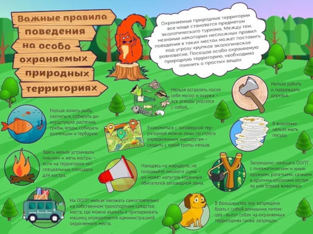

Особо охраняемые природные территории (ООПТ) — участки земли, водной
поверхности и воздушного пространства над ними, где располагаются
природные комплексы и объекты, которые имеют особое природоохранное,
научное, культурное, эстетическое, рекреационное и оздоровительное
значение. В соответствии с ФЗ №33, они делятся на семь видов:
- Государственные природные заповедники (в том числе биосферные)
- Национальные парки
- Природные парки
- Государственные природные заказники
- Памятники природы
- Дендрологические парки и ботанические сады
- Территории традиционного природопользования
 |
 |